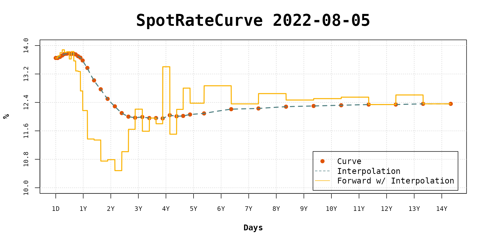

Spot Rate Curve Interpolation
Source:vignettes/spot-rate-curve-interpolation.Rmd
spot-rate-curve-interpolation.RmdThe fixedincome package implements many interpolation methods for spot rate curve. All interpolation methods inherits the S4 class Interpolation. Once you instantiate an Interpolation object, it has to be set to a SpotRateCurve object and this is done throught the curve’s interpolation<- method.
There is a list with the interpolation methods implemented and their constructors:
- Flat Forward:
interp_flatforward - Linear:
interp_linear - Log-Linear:
interp_loglinear - Natural Spline:
interp_naturalspline - Hermite Spline:
interp_hermitespline - Nelson Siegel:
interp_nelsonsiegel - Nelson Siegel Svensson:
interp_nelsonsiegelsvensson - Flat Forward COPOM:
interp_flatforwardcopom(thru copom package)
Here it follows an example on how to create and set an interpolation to a spot rate curve.
Let’s start by creating a curve using data obtained with rb3 package.
Firstly, the packages have to be loaded.
Use the bizdays::getdate function to get the last business day, according to Brazil/ANBIMA calendar.
In order to build a term structure formed only by futures maturities, the yield curve data and futures data have to be mixed and this is done with the rb3::yc_superset function. Once the superset is returned, the rows related to futures maturities can be filtered. The first term, usually 1 business day term, is also used to anchor the curve’s short part.
yc_ <- yc_get(refdate)
fut_ <- futures_get(refdate)
yc_ss <- yc_superset(yc_, fut_)
yc <- bind_rows(
yc_ss |> slice(1),
yc_ss |> filter(!is.na(symbol))
)
yc
#> # A tibble: 39 × 7
#> refdate cur_days biz_days forward_date r_252 r_360 symbol
#> <date> <int> <dbl> <date> <dbl> <dbl> <chr>
#> 1 2022-07-14 1 1 2022-07-15 0.132 0 NA
#> 2 2022-07-14 18 12 2022-08-01 0.132 0.125 DI1Q22
#> 3 2022-07-14 49 35 2022-09-01 0.134 0.137 DI1U22
#> 4 2022-07-14 81 56 2022-10-03 0.136 0.134 DI1V22
#> 5 2022-07-14 110 76 2022-11-01 0.137 0.135 DI1X22
#> 6 2022-07-14 140 96 2022-12-01 0.138 0.135 DI1Z22
#> 7 2022-07-14 172 118 2023-01-02 0.139 0.136 DI1F23
#> 8 2022-07-14 202 140 2023-02-01 0.140 0.138 DI1G23
#> 9 2022-07-14 230 158 2023-03-01 0.140 0.138 DI1H23
#> 10 2022-07-14 263 181 2023-04-03 0.141 0.138 DI1J23
#> # … with 29 more rowsWith the curve data prepared, the spotratecurve is created.
sp_curve <- spotratecurve(
yc$r_252, yc$biz_days,
"discrete", "business/252", "Brazil/ANBIMA",
refdate = refdate
)
sp_curve
#> SpotRateCurve
#> 1 day 0.1315
#> 12 days 0.1315
#> 35 days 0.1343
#> 56 days 0.1356
#> 76 days 0.1368
#> 96 days 0.1381
#> 118 days 0.1390
#> 140 days 0.1399
#> 158 days 0.1403
#> 181 days 0.1409
#> # ... with 29 more rows
#> discrete business/252 Brazil/ANBIMA
#> Reference date: 2022-07-14From the output above it is possible to observe that this curve does not have an interpolation method defined.
Let’s, for example, define a flat forward interpolation for this curve. The FlatForward object is created and set to the curve with the interpolation<- method.
interpolation(sp_curve) <- interp_flatforward()
sp_curve
#> SpotRateCurve
#> 1 day 0.1315
#> 12 days 0.1315
#> 35 days 0.1343
#> 56 days 0.1356
#> 76 days 0.1368
#> 96 days 0.1381
#> 118 days 0.1390
#> 140 days 0.1399
#> 158 days 0.1403
#> 181 days 0.1409
#> # ... with 29 more rows
#> discrete business/252 Brazil/ANBIMA
#> Reference date: 2022-07-14
#> Interpolation: flatforwardNow the output shows the curve with the interpolation defined.
Interpolate with [[
The spot rate curve method [[ is used to interpolte the curve. The term is passed as a Term object or numeric and a spot rate curve is returned with all interpolated values.
sp_curve[[c(21, 42, 63)]]
#> SpotRateCurve
#> 21 days 0.1333
#> 42 days 0.1349
#> 63 days 0.1361
#> discrete business/252 Brazil/ANBIMA
#> Reference date: 2022-07-14The term 21 doesn’t exist in the spot rate curve, so it is interpolated according to the interpolation method defined. Since the flat forward interpolation just connect the dots, the terms 42 and 63 have the same values of the spot rate curve.
Other interpolation methods can be set with the interpolation method overriding any method set previously.
interpolation(sp_curve) <- interp_naturalspline()
sp_curve[[c(21, 42, 63)]]
#> SpotRateCurve
#> 21 days 0.1324
#> 42 days 0.1349
#> 63 days 0.1360
#> discrete business/252 Brazil/ANBIMA
#> Reference date: 2022-07-14Unset interpolation
Set interpolation to NULL to unset the interpolation.
interpolation(sp_curve) <- NULL
sp_curve[[c(21, 42, 63)]]
#> SpotRateCurve
#> 21 days NA
#> 42 days NA
#> 63 days NA
#> discrete business/252 Brazil/ANBIMA
#> Reference date: 2022-07-14Note that for those terms in the [[ method that don’t have a related term in the spot rate curve, NA is returned.
Plot with interpolation
The fixedincome::plot method for the spot rate curve has an argument use_interpolation that shows the interpolation together with the curve points. This argument defaults to FALSE.
interpolation(sp_curve) <- interp_flatforward()
plot(sp_curve, use_interpolation = TRUE)Forward rates with and without interpolation set
Once the interpolation is set, the plot method uses it to calculate daily forward rates. Otherwise, it uses the forward rates between the curve terms. Set the show_forward argument to TRUE to show the forward rates.
interpolation(sp_curve) <- NULL
plot(sp_curve, show_forward = TRUE, legend_location = "bottomright")
The forward rates are drawn with step lines.
If the use_interpolation argument is TRUE then the daily forward rates are calculated with the defined interpolation.
interpolation(sp_curve) <- interp_flatforward()
plot(sp_curve, use_interpolation = TRUE, show_forward = TRUE, legend_location = "bottomright")It is possible to note that the flat forward daily rates are fairly close to curve terms forward rates.
As the interpolation changes its effects can be viewed in the forward rates dynamic.
interpolation(sp_curve) <- interp_naturalspline()
plot(sp_curve, use_interpolation = TRUE, show_forward = TRUE, legend_location = "bottomright")